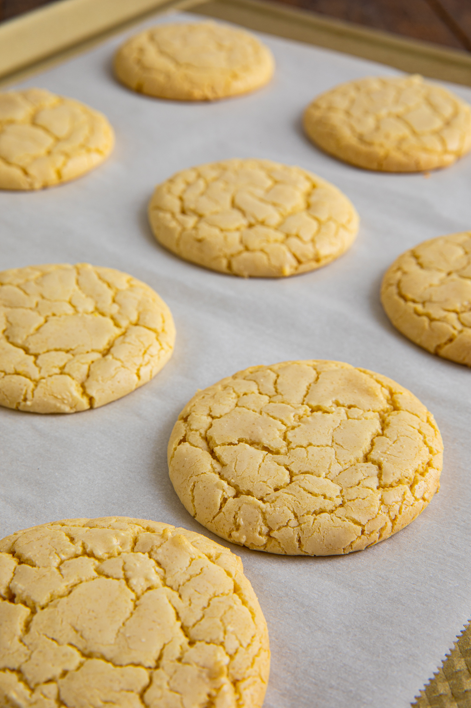

Blondie Cookies
Perfect recipe for the most simple yet delicious cookies in my recipe book. Surprise your friends and family with amazing flavor hidden by a very mute exterior look

Items needed to make the cookies
- 1 Large Mixing Bowl
- 1 Small Frying Pan
- 1 Small Mixing Bowl
Ingredients (16 Cookies)
- 3/4 cup unsalted butter
- 1 cup brown sugar, packed
- 1/4 cup granulated sugar
- 1 egg + 1 egg yolk, room temp
- 1 tablespoon vanilla extract
- 1 3/4 cup all-purpose flour
- 3/4 teaspoon baking soda
- 1 teaspoon sea salt
Directions
- Brown the butter over medium heat, stirring constantly until the butter begins to foam and turns a golden brown
- Take butter off the heat and give it time to cool
- Combine the cooled butter, brown sugar, and white sugar together in the large mixing bowl. Beat until mixed together
- Add in the egg, egg yolk, and vanilla extract to the large bowl. Mix well
- In the small mixing bowl, mix the flour, salt, and baking soda
- Preheat oven to 350F
- Mix half the dry ingredients into the wet until everything comes together then slowly add the rest
- Bake for 11 minutes, or until the edges are golden brown and the centers have puffed up but are still gooey
- Done! Allow to cool and then enjoy!